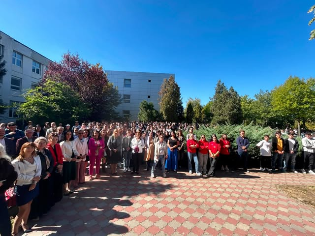
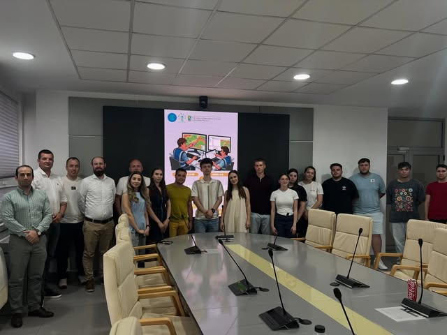
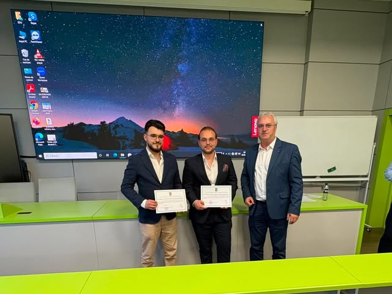
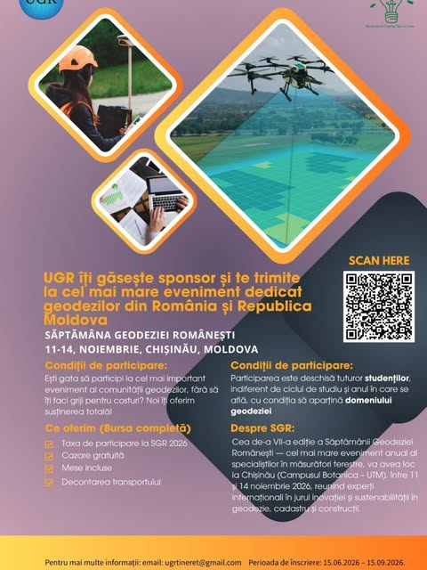
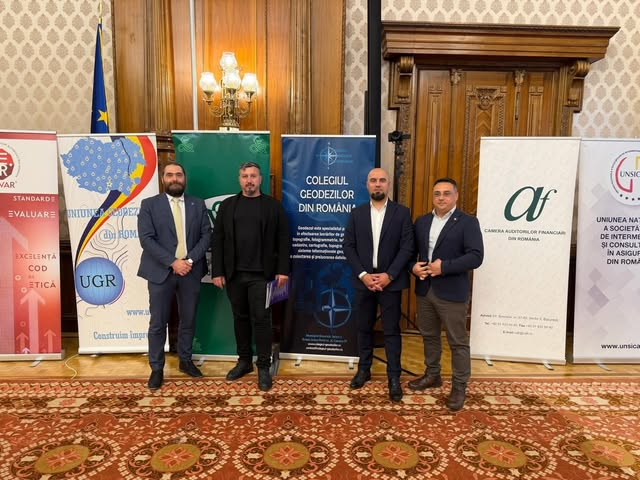
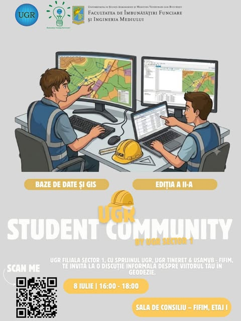
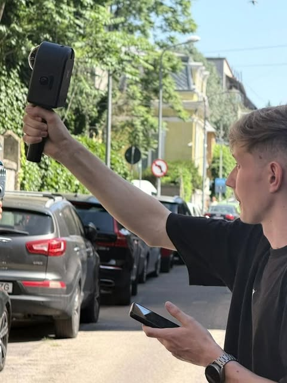
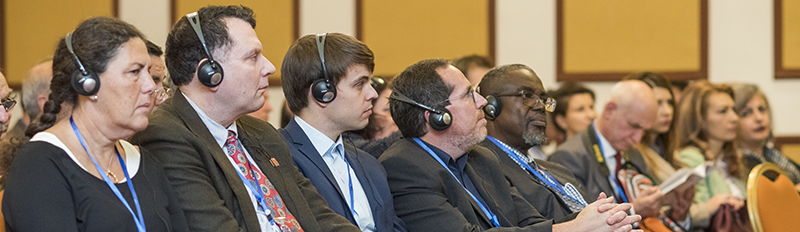
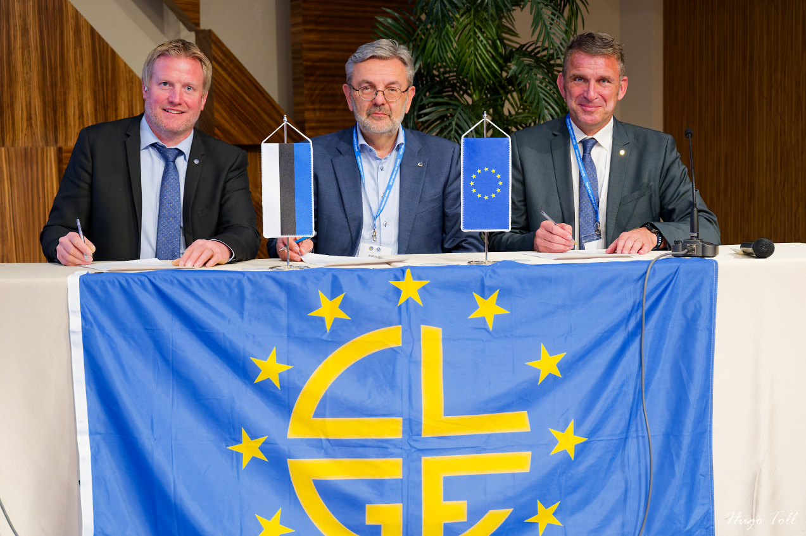
Rețeaua profesioniștilor care măsoară România.
Filiala Sector 1 București a Uniunii Geodezilor din România (UGR Național — asociația profesională fondată în 1990) reunește ingineri geodezi, topografi autorizați și cartografi într-o structură națională unitară dedicată preciziei matematice, integrității profesionale și dialogului legislativ permanent cu ANCPI și OCPI București.
Integritate terestră, viziune spațială.
Uniunea Geodezilor din România (UGR) reprezintă autoritatea profesională independentă a inginerilor măsurătorilor terestre. Ne asigurăm că normele profesionale, etica de lucru și reglementările administrative încadrează corect profesia de geodez autorizat, garantând rigurozitate tehnică în toate lucrările de infrastructură națională și cadastru general.
Alătură-te breslei profesionale a geodezilor
Completează formularul digital în doar 2 minute pentru înregistrare ca membru.
O istorie marcată de excelență
Organismele și evoluția completă a Uniunii Geodezilor de la evenimentele fondatoare din 1990 încoace.
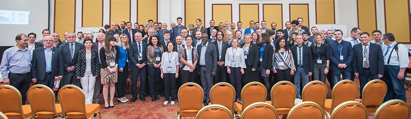
Parcursul evolutiv complet
Fondarea Uniunii la București
În primăvara anului 1990, un grup entuziast de specialiști reuniți la Facultatea de Geodezie din București decide înființarea unei uniuni profesionale a geodezilor, stabilind bazele organizatorice ale asociației.
Perioada de consolidare și extindere
Sub președinția lui Săvulescu și conducerea activă, numărul membrilor crește semnificativ, ajungând de la 400 la peste 2.500 de specialiști. Această etapă este marcată de apariția și publicarea regulată a Revistei de Geodezie, Cartografie și Cadastru.
Aderarea internațională oficială
UGR devine un reprezentant de referință la nivel internațional, fiind afiliată activ la Federația Internațională a Geodezilor (FIG) și la Consiliul European al Geodezilor (CLGE), preluând bunele practici tehnice și etice europene.
Protocolul istoric cu ANCPI
Uniunea semnează un protocol de colaborare strânsă cu Agenția Națională de Cadastru și Publicitate Imobiliară. Revista de profil este relansată în limba engleză pentru a oferi vizibilitate cercetării din România.
Proiectul Legii Geodezului
Se elaborează și se depune la comisiile de specialitate ale Camerei Deputaților proiectul legislativ istoric privind organizarea și exercitarea profesiei de geodez autorizat în România.
Alegerea noii conduceri și relansarea SGR
Pe 10 iunie 2022 se alege o nouă structură a Biroului Executiv. În același an, evenimentul fanion Săptămâna Geodeziei Românești este relansat cu un succes de răsunet la Brașov.
Săptămâna Geodeziei Timișoara & Filiala UTM
UGR organizează cea de-a VI-a ediție a Săptămânii Geodeziei la Timișoara în parteneriat cu universitățile de profil și marchează înființarea istorică a filialei transfrontaliere la Chișinău (UTM), extinzând comunitatea geodezică.
Consiliul de Conducere — Filiala Sector 1 București
Alexandru Dorin Păun
Andra Teodora Vișan
Alexandru Nelepcu
Ștefan Paul Matei
Nicoleta Bobîrcea
Radu Mihai Niță
Conducerea executivă a Asociației Locale UGR București Sector 1 (aleasă conform statutului).
Statutul Uniunii Geodezilor din România
Aprobat în data de 24 noiembrie 2017
Articole și Evenimente Tehnice
Păstrează legătura cu modificările legislative din geodezie, congresele internaționale UGR și activitățile Filialei Sector 1 București.
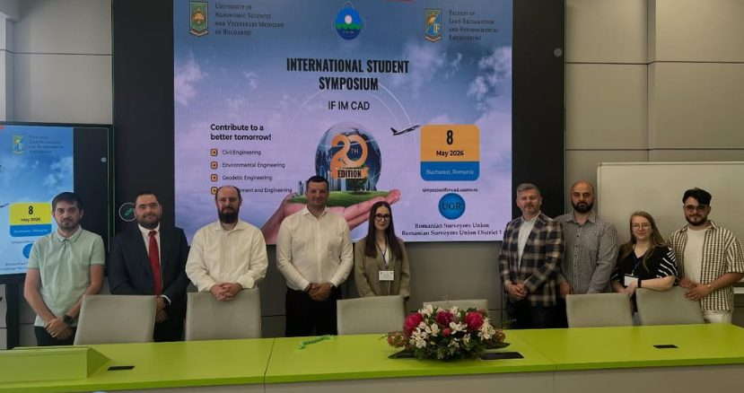
Toate Postările @filiala.sector1.ugr
Fiecare postare publicată pe contul oficial de Instagram al Filialei Sector 1, cu poza principală și textul original, nealterate.
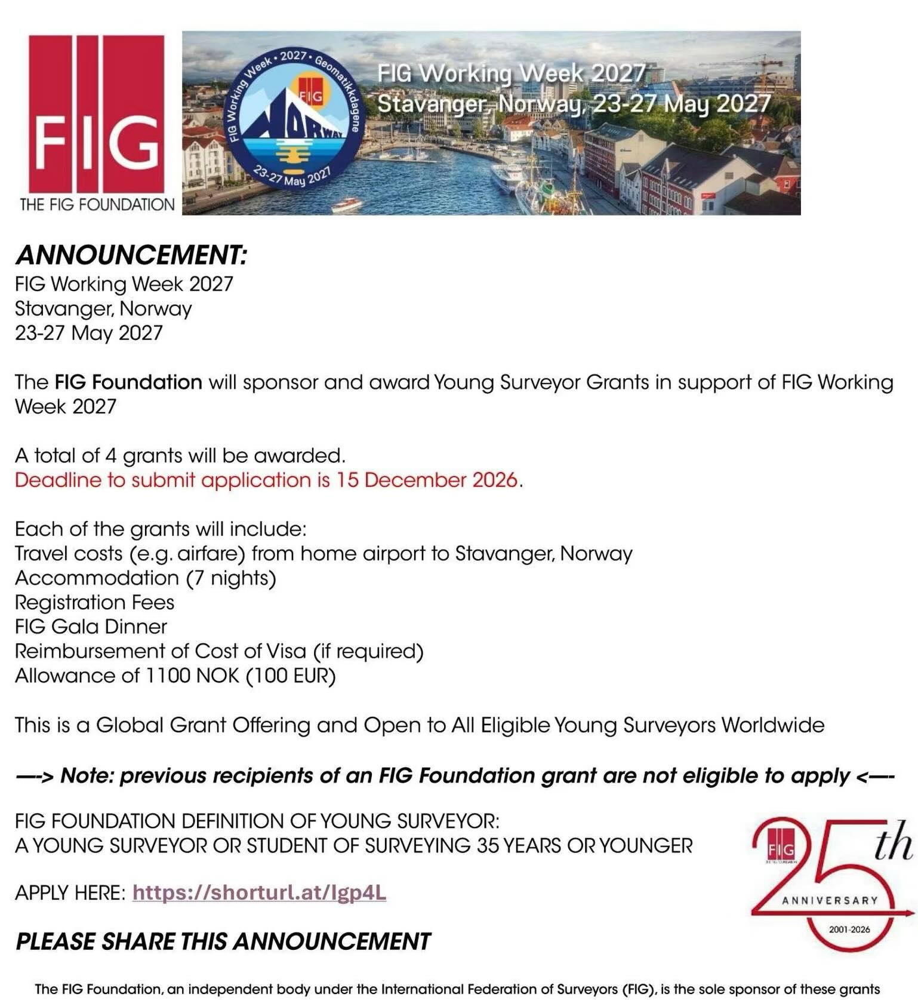
Burse FIG Foundation pentru Tineri Topografi — FIG Working Week 2027
ANNOUNCEMENT:
FIG Working Week 2027
Stavanger, Norway
23-27 May 2027
The FIG Foundation will sponsor and award Young Surveyor Grants in support of FIG Working Week 2027
A total of 4 grants will be awarded.
Deadline to submit application is 15 December 2026.
Each of the grants will include:
Travel costs (e.g. airfare) from home airport to Stavanger, Norway
Accommodation (7 nights)
Registration Fees
FIG Gala Dinner
Reimbursement of Cost of Visa (if required)
Allowance of 1100 NOK (100 EUR)
This is a Global Grant Offering and Open to All Eligible Young Surveyors Worldwide
—- Note: previous recipients of an FIG Foundation grant are not eligible to apply —-
FIG FOUNDATION DEFINITION OF YOUNG SURVEYOR:
A YOUNG SURVEYOR OR STUDENT OF SURVEYING 35 YEARS OR YOUNGER
APPLY HERE: https://docs.google.com/forms/d/e/1FAIpQLSdp3_XuKqzmUP3Y_JBQWJGt_3ZGDu4M7AMZjJ_y5j6eHmS3Jg/viewform
PLEASE SHARE THIS ANNOUNCEMENT
The FIG Foundation, an independent body under the International Federation of Surveyors (FIG), is the sole sponsor of these grants
Nou An Universitar la FIFIM
Nou an universitar, noi perspective! 📐✨
Echipa UGR Sector 1 urează mult succes tuturor studenților și cadrelor didactice de la FIFIM la începutul acestui drum. Vă dorim un an plin de realizări, proiecte ambițioase și rezultate excelente!
Suntem alături de viitorii noștri colegi din prima zi: ne implicăm activ în viața facultății prin parteneriate, workshopuri aplicate, prezentări dedicate și tot sprijinul necesar pentru cei care au ales acest drum.
Geodezia este o profesie liberală reglementată și de interes public care își aduce aportul în domenii diverse și de maximă importanță.
Mult succes în noul an universitar! Ne vedem pe teren și în sălile de curs. 🚀
#UGR #UGRSector1 #FIFIM #Geodezie
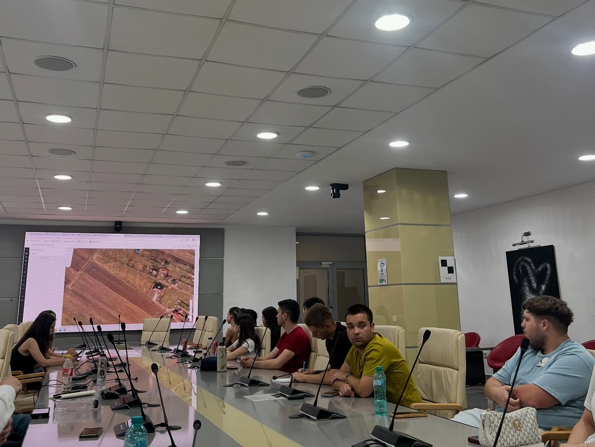
UGR Student Community — Ediția a II-a
Ediția a II-a UGR Student Community by UGR Sector 1! 🚀
Continuăm seria întâlnirilor cu viitorii noștri colegi! Dacă la prima ediție am dezbătut aspecte esențiale despre carieră, de la realizarea unui CV și interviul de angajare, până la experiențele din studenție și provocările reale din topografia inginerească de pe șantiere, de data aceasta am abordat latura tehnică: bazele de date și sistemele GIS.
Am discutat aplicat despre cum gestionăm și analizăm informația spațială pentru a o transforma în soluții eficiente pentru proiectele noastre.
Dincolo de discuțiile tehnice, misiunea noastră rămâne aceeași. Numele UGR Student Community nu este deloc întâmplător, suntem aici pentru că vrem să formăm o comunitate. Ne dorim să facilităm o tranziție cât mai ușoară de la băncile facultății la viața profesională, prin sprijin reciproc și experiențe împărtășite.
Mulțumim tuturor studenților pentru energie și implicare!De asemenea, mulțumim FIFIM pentru găzduire și pentru sprijinul continuu în dezvoltarea acestui proiect!
Construim această comunitate împreună, pas cu pas. 🤝
#UGR #UGRSector1 #UGRStudentCommunity #FIFIM #USAMV
Anunț: UGR Student Community, Ediția a II-a
Facultatea îți oferă fundația: cursurile, conceptele și teoria. Adevărata imagine a meseriei se conturează însă după ani de experiență.
După o primă întâlnire plină de energie, UGR Student Community by UGR Sector 1 revine cu ediția a II-a!
Continuăm să construim puntea dintre facultate și realitatea din domeniu printr-un nou dialog deschis, informal și relaxat. 📆 Te așteptăm pe 8 iulie, de la ora 16:00 (până la 18:00) la o discuție deschisă despre geodezie - motivație, provocări și realitate.
📍 Punct de întâlnire: Sala de Consiliu, FIFIM – USAMV
⚠️ Locurile sunt limitate.
📌 Înscriere: https://forms.gle/QE393Zji1cKBhCGs6
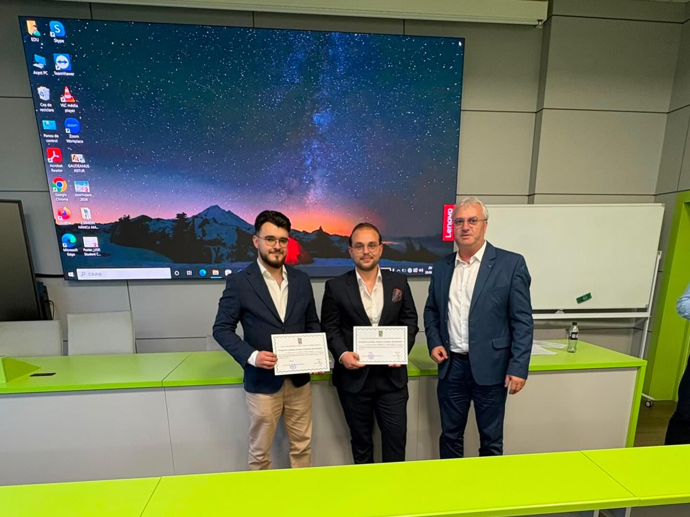
Premii de Excelență UGR la Susținerea Lucrărilor de Licență
🏆 Susținem performanța. Investim în viitorul profesiei.
Reprezentanții Uniunii Geodezilor din România și ai Filialei UGR Sector 1 au fost prezenți la susținerea lucrărilor de licență ale absolvenților programului de studii Măsurători Terestre și Cadastru, din cadrul Facultății de Îmbunătățiri Funciare și Ingineria Mediului – USAMV București.
În semn de apreciere pentru rezultatele obținute și pentru implicarea studenților, au fost acordate:
🏅 Premiul de Excelență UGR, acordat celor doi absolvenți care s-au remarcat prin rezultatele academice și calitatea lucrărilor de licență;
🏅 Un premiu special UGR pentru performanță și profesionalism;
🏅 Premiul Filialei UGR Sector 1, acordat unui student remarcat prin rezultatele și implicarea sa.
Totodată, Filiala UGR Sector 1 oferă 18 workshopuri de specialitate desfășurate în cadrul unor companii de profil, dedicate studenților programului Măsurători Terestre și Cadastru:
🔹 9 workshopuri pentru studenții de la învățământ cu frecvență;
🔹 9 workshopuri pentru studenții de la învățământ cu frecvență redusă.
Mulțumim partenerilor care s-au alăturat acestei inițiative și contribuie activ la pregătirea viitorilor specialiști:
🔹 KarmaCad Store - @karmacad.scanare3d
🔹 SphereFix România
🔹 Control Survey SRL - @controlsurveycad
👏 Felicitări tuturor absolvenților! Vă dorim succes în carieră și cât mai multe realizări profesionale!
#UGR #UGRSector1 #MasuratoriTerestreSiCadastru #USAMV #Geodezie
Burse Complete pentru Săptămâna Geodeziei Românești 2026
📢 Ești student la Geodezie și vrei să participi gratuit la cel mai important eveniment al anului?
UGR îți oferă șansa de a ajunge la Săptămâna Geodeziei Românești 2026 (11–14 noiembrie, Chișinău), printr-o bursă completă care acoperă:
✅ taxa de participare
✅ cazarea
✅ mesele
✅ transportul
📅 Înscrieri: 15 iunie – 15 septembrie 2026
📲 Scanează codul QR din poster pentru înscriere sau accesează direct link-ul: https://docs.google.com/forms/d/e/1FAIpQLSctDTm-Gxuph4yz2fJRiU2JOurBFgzBXriAUY6rbrtem5vrEQ/viewform?usp=header
Mai multe detalii: https://www.ugr.ro/stiri/start-inscrieri-pentru-bursele-de-participare-la-cea-de-a-vii-a-editie-a-saptamanii-geodeziei-romanesti-chisinau-2026
#UGR #TineriGeodezi #SGR2026 #Geodezie #Surveying StudentiLaGeodezie RomanianYoungSurveyors Chișinău BursaUGR
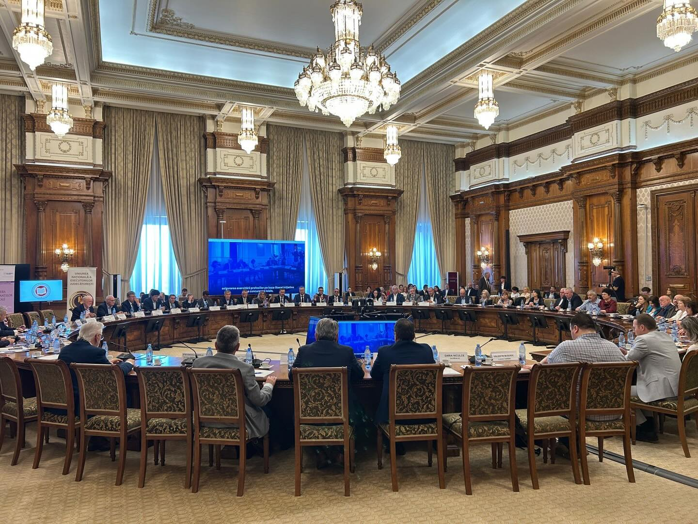
Aniversarea a 25 de Ani a Uniunii Profesiilor Liberale din România
Uniunea Geodezilor din Romania si Filiala UGR Sector 1 este prezentă și reprezentată la cea de-a 25 aniversare a Uniunii Profesiilor Liberale din Romania. 🤝🏼
Training LiDAR cu Control Survey la IF IM CAD
🚀 Experiență practică: Training specializat susținut de Control Survey
Am avut oportunitatea de a colabora cu echipa @controlsurveycad în cadrul celei de-a XX-a ediții a International Student Symposium "IF IM CAD". @fifim.bucuresti
Aceștia au oferit participanților un training intensiv dedicat tehnologiilor de scanare LiDAR, punând la dispoziție echipamente de ultimă generație, precum XGRIDS Lixel Kity K1 și PortalCam. Aceștia au parcurs împreună întreg fluxul de lucru, de la captarea datelor în teren până la prelucrarea norilor de puncte.
Le mulțumim pentru implicarea activă în formarea noii generații de specialiști și pentru susținerea inovației în mediul academic! ✨
#engineering #LiDAR #scanning #UGRSector1 #USAMVB
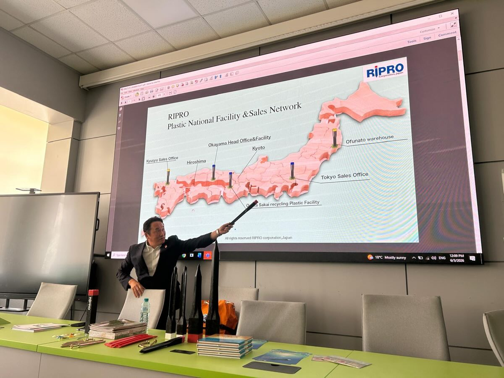
Parteneriat Internațional cu RIPRO Corporation Japan
De la simple marcaje topografice la o monitorizare inteligentă.
Inginerul geodez, managerul datelor geospațiale, este cel care are pregătirea necesară utilizării acestor tehnologii.
În lumea de azi, inginerul geodez utilizează materiale reciclabile, prietenoase cu mediul.
Astăzi, împreună cu un partener internațional, RIPRO CORPORATION JAPAN, maine cu RIPRO și în România. 🤝🏼#RIPRO #UGRSector1 #USAMVB #FIFIM ✨
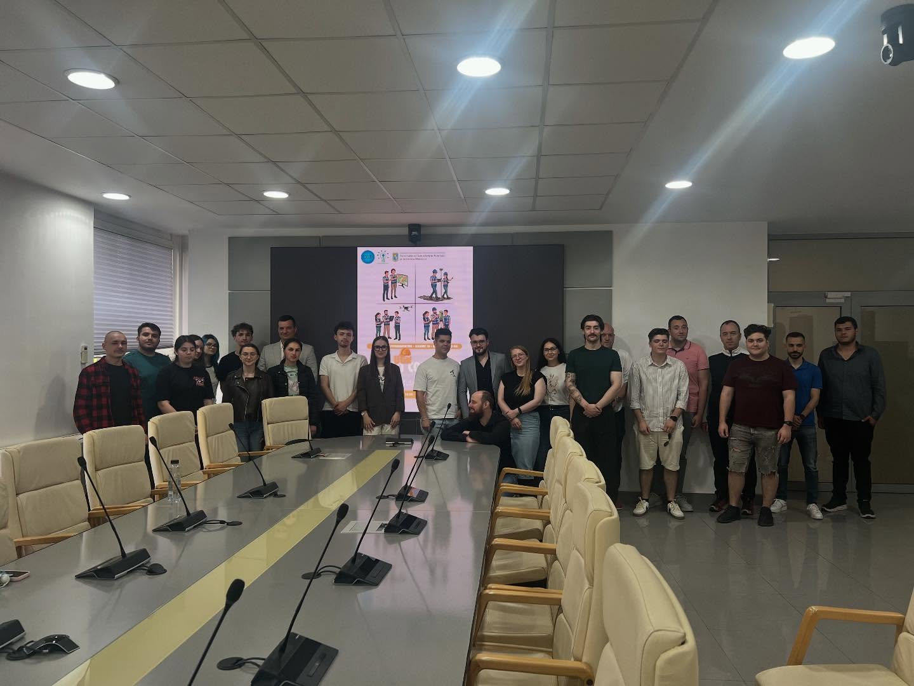
Prima Ediție UGR Student Community
✨ Prima ediție UGR Student Community by UGR Sector 1!
Am dat startul unei inițiative de suflet la USAMVB - FIFIM, unde am petrecut timp de calitate alături de viitorii noștri colegi de breaslă. Nu a fost doar o prezentare, ci o discuție deschisă despre ce contează atunci când treci de la băncile facultății la realitatea din teren.
Am dezbătut aspecte esențiale despre carieră, de la realizarea unui CV și interviul de angajare, până la experiențele din studenție și provocările reale din topografia inginerească de pe șantiere.
Mulțumim tuturor studenților pentru energie și întrebări! Aceasta este doar prima etapă dintr-o comunitate pe care o construim împreună, pas cu pas. 📐🛠️
Mulțumim FIFIM pentru găzduire și pentru sprijinul oferit în lansarea acestui proiect dedicat studenților! 🤝
#USAMV #FIFIM #UGRStudentCommunity #UGR #UGRSector1
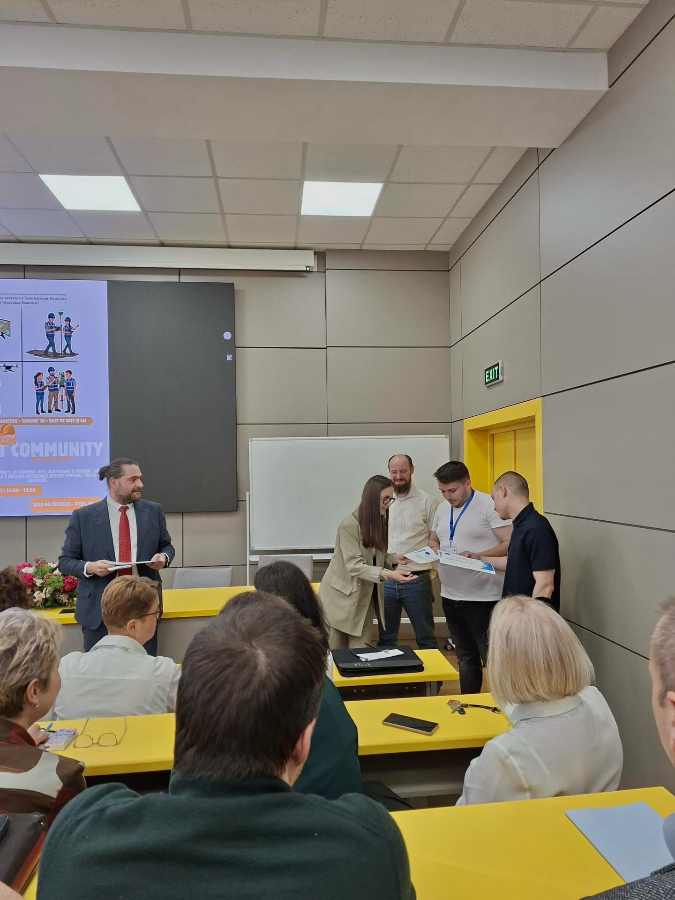
Predarea Ștafetei — Ambasadorul Geodeziei 2026
🏅 Ștafeta excelenței a fost predată la Simpozionul IF IM CAD 2026!
Astăzi a fost o zi plină de emoție și profesionalism la Facultatea de Îmbunătățiri Funciare și Ingineria Mediului. Uniunea Geodezilor din România și UGR Sector 1 au fost alături de studenți pentru a celebra inovația și munca depusă în cercetare.
Unul dintre cele mai frumoase momente a fost predarea ștafetei Ambasadorul Geodeziei. După ce anul trecut acest titlu a fost deținut de colega noastră, Andra Vișan, astăzi ea a avut onoarea de a înmâna distincția noilor ambasadori: Marian Alexandru Rusu și Denis-Gabriel Țicu, premiați pentru o lucrare de excepție privind platformele geospațiale 3D.
UGR Sector 1 a pregătit și o serie de surprize pentru toți participanții! Dincolo de suportul tehnic și prezența la stand, am dorit să premiem performanța prin acordarea premiilor pentru Locul 1, 2 și 3.
Felicitări tuturor studenților pentru nivelul academic ridicat și mult succes noilor Ambasadori!
#UGR #UGRSector1 #AmbasadorulGeodeziei #IFIMCAD2026
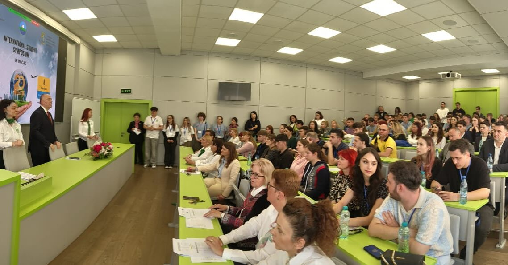
IF IM CAD 2026 — Sală Plină de Energie
O sală plină de energie și viitori specialiști la IF IM CAD 2026! 🎓✨
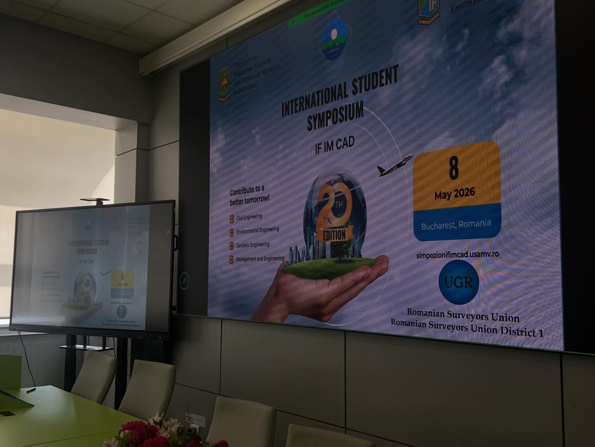
Simpozionul Internațional IF IM CAD — Comisia 3
Suntem prezenți astăzi la Simpozionul Internațional IF IM CAD! 📍
Uniunea Geodezilor din România - UGR și UGR Sector 1 sunt alături de studenți pentru a susține performanța în domeniu. Suntem reprezentați cu mândrie și de Comisia 3.
#UGR #UGRSector1 #Comisia3 #Geodezie #IFIMCAD2026
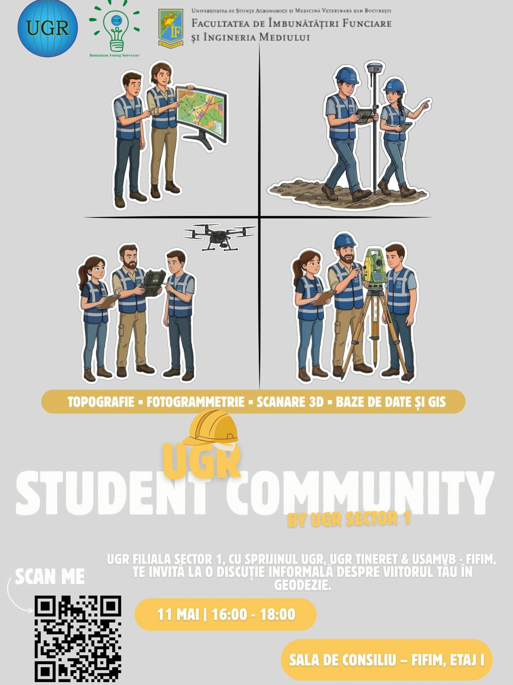
Anunț: Lansarea UGR Student Community
Echipa UGR Sector 1 are plăcerea de a anunța primul proiect demarat în această formulă: UGR Student Community by UGR Sector 1.
Totul pornește din facultate, din cursuri, teorie și principiile care stau la baza domeniului, însă adevărata înțelegere apare pe teren și în proiecte reale.
UGR Student Community by UGR Sector 1 este o experiență care face legătura dintre facultate și profesie. Vei avea ocazia să discuți direct cu ingineri din domeniul geodeziei și să descoperi parcursul lor profesional, provocările întâlnite și oportunitățile care pot apărea pe drumul tău.
📆 Te așteptăm la prima ediție, pe 11 mai, de la ora 16:00 (până la 18:00) la o discuție deschisă despre geodezie — motivație, provocări și realitate din domeniu.
📍 Punct de întâlnire: Sala de Consiliu, FIFIM – USAMV
⚠️ Locurile sunt limitate.
✏️ Înscriere: https://forms.gle/gC3bPXCLFnKLpfxw6
Lansarea Canalelor Oficiale de Social Media
Marcăm astăzi un moment important: inaugurarea canalelor oficiale de social media ale filialei noastre. De astăzi, UGR Sector 1 este prezentă și pe Facebook și Instagram.
Noua echipă de conducere își propune să utilizeze acest spațiu pentru a vă ține la curent cu toate activitățile, acțiunile și viitoarele proiecte pe care le vom demara în această formulă.
Stați aproape, deoarece surprizele continuă!⚡️
Vă invităm să ne fiți alături printr-un Follow și Like pentru a rămâne conectați. 👥
Membri
Evidența membrilor acreditați UGR, procedura de înscriere și datele de contact ale Filialei Sector 1.
Devino Membru al Filialei Sector 1 București
Bucură-te de recunoaștere națională, asistență tehnico-juridică la BCPI Sector 1, reduceri la cursurile de perfecționare și vot statutar în adunările generale UGR.
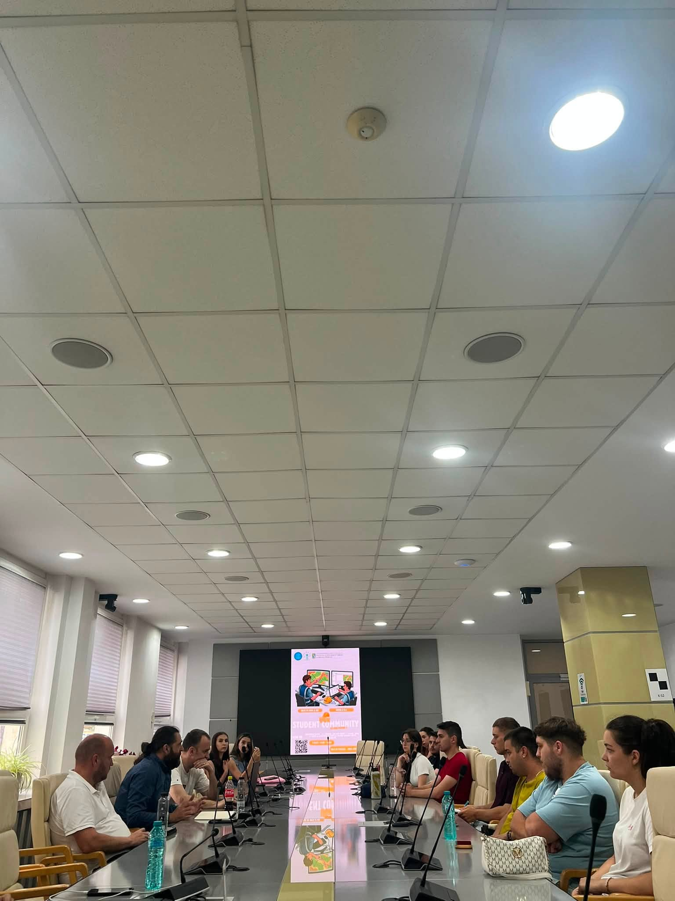
Registrul membrilor
| Nr. Legitimație | Nume & Prenume | Filială / Județ | Status |
|---|
Formulare Tipizate de Înscriere (Descărcare Gratuită)
Date de Contact & Puncte de Întâlnire
Președinte: Alexandru Dorin PĂUN · 0726 390 774 / 0748 912 263
Secretar: Andra Teodora VIȘAN · 0764 572 874
Info Cotizații & Taxe: Camelia MATEI · 0722 684 104
Email: filiala.ugr.s1@gmail.com
Telefon: 0723 587 081 | Email: office@ugr.ro
Cod Fiscal (CIF): 6480330
Trimite un Mesaj Secretariatului
Pentru întrebări, spețe profesionale la nivel de Sector 1 sau informații privind înscrierea în asociație.